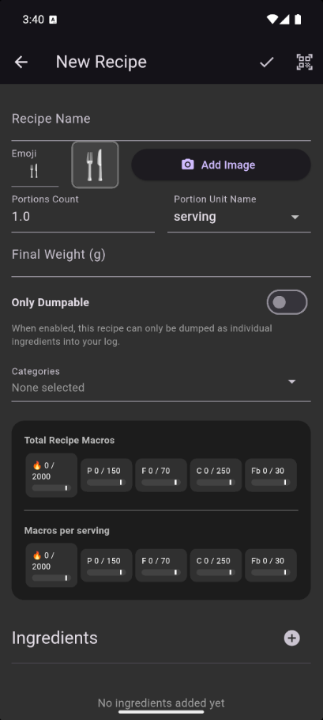

Recipes & Templates¶
Recipes in Meal of Record come in two flavors, each designed for a different kind of meal. Understanding the difference will help you pick the right one.
Regular Recipes¶
A regular recipe is what you're used to thinking of recipies as being. It could be pie, bread, cookies, ice cream, etc. where there's a fixed recipe (so not a "whatever's in the fridge" stur-fry) and where the ingrediant split in a serving is representative of the ingrediant ratios in the recipe (so not trail mix where you're selectively picking out what you want)
Best for: Baked goods, meal prep, anything you make in a batch and eat in portions.
How it works when logging: The recipe appears as one item in your log. You pick how many servings or grams you had, and the app calculates the macros.
Example: Chocolate chip cookies
You create a recipe with flour, butter, sugar, eggs, and chocolate chips. You set the batch to 24 cookies. When you eat 3 cookies, you log "3" servings of the recipe.
Example: Ice cream
You create a recipe with cream, sugar, and chocolate chips. You set the portion count to 1. When you eat some, you weight it, and then enter the weight in grams.
Dump Recipes (Templates)¶
A dump recipe is a template for meals that vary. A salad, a breakfast burrito, a smoothie — the core ingredients are the same, but the ratios may change, you might add extra spinach today, or skip the avocado tomorrow.
Best for: Meals you build from a flexible set of ingredients.
How it works when logging: Instead of logging the recipe as one item, the app "dumps" each ingredient separately into your Log Queue. You can then adjust quantities, remove items, or add extras before logging.
Example: Lunch salad
You create a dump recipe with greens, chicken, tomatoes, feta, and dressing. When you use it, each ingredient lands in your queue individually. Today you skipped the feta and added extra chicken — just delete the feta and adjust the chicken weight.
Dumping and adding recipes
The (+) button will dump Dump Only recipes, and will otherwise add a portion of the recipe to your Log Queue.
Tapping the recipe will bring up the Quantity Edit screen for regular ingrediants, does nothing for Dump Only recipes.
Swiping to the right brings up the abilities to Edit, Copy, or Dump recipies.
Which Type Should I Use?¶
| Regular | Dump | |
|---|---|---|
| Logged as | One item | Individual ingredients |
| Adjustable per meal? | No (fixed portions) | Yes (tweak each ingredient) |
| Good for | Consistent recipes | Flexible, varying meals |
Creating a Recipe¶
- Open the Recipe tab on the Search screen and tap New.
- Add a name
- Set an emoji or add an image, or lot an emoji be automatically set.
- Set a Portion Count: convienient if the recipe's pre devided (cookies, pizza slice, meal prep), but can be left as 1 if each serving is just going to be a weighed amount.
- Set a Portion Unit Name: Elusidating if Portion Count is meaningfully set but somewhat irrelevant if each serving is just a weighed amount (soup, ice cream)
- Enter the Final Weight of the finished batch if it's relevant and different from the weight of entered ingrediants; soup where you eyeball adding water and then boil some off, baked goods that aren't pre-portioned where water's being driven off, but maybe not ice cream where it's not pre-portioned and the total weight equals the weight of the ingrediants, or cookies where you typically count the number of cookies, not grams.
- Choose whether or not it's Dump Only.
- If desired, add a Catagory.
- Add ingredients by searching for foods (or other recipes — recipes can be nested).
- Tap Save.

Nested recipes
You can add a recipe as an ingredient in another recipe. For example, if you have a "pizza dough" recipe, you can use it as an ingredient in a "pepperoni pizza" recipe.
Sharing Recipes via QR Codes¶
You can share recipes with other Meal of Record users without needing an internet connection.
- To share: Open a saved recipe and tap the Share button. The app generates one or more QR codes.
- To receive: Tap Scan when creating a new recipe. Point your camera at the other person's screen as the app cycles through QR code chunks to reassemble the recipe.
For complex recipes with many ingredients, the data is split across multiple QR codes that auto-cycle. The receiver just keeps the camera pointed at the screen until all chunks are captured.
Under the Hood: Why Two Recipe Types?
The regular vs. dump distinction isn't just a UI convenience — it affects how your data is stored, versioned, and most importantly, how much space it takes.
Regular recipes are stored as a single entity with a version history. When you log "2 cookies," the app records a reference to that specific version of the recipe. If you later change the recipe (swap butter for oil), your past logs still reflect the original version, while new logs will reference a new version of the recip. It's imple and intuative to use, but each version takes up some additional space. Note: until you log a Regular recipe, you can make any number of edits without new versions being created (the app inteligently checks how to best handle a change).
Dump recipes don't have this versioning overhead because they're not logged as a unit. When you dump a template, the individual ingredients are logged as separate food entries. The template itself is just a convenience for populating your queue quickly. This means dump recipes can be updated freely without accumulating storage, but your log won't show "Lunch Salad" — it will show each ingredient separately.